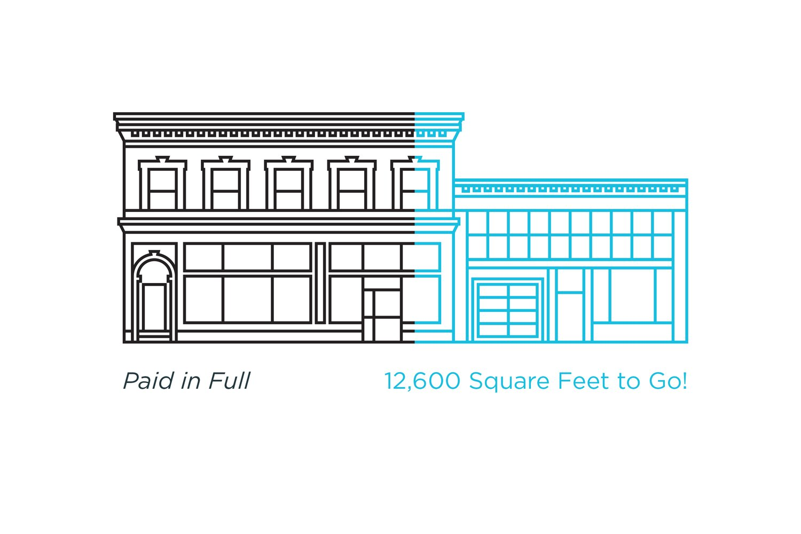

by Matt Kumar
Over the past 30 years, YWAM San Francisco has gone on a journey with God. And because of the perseverance, resilience and faithfulness of our early pioneers we are now able to see just what God can cultivate in a city like ours.
In celebrating all that we've grown to be, we wanted to acknowledge our current Base Directors, and Bay Area Coordinator Tim and Karol Svoboda. They've lived lives of humility, and even the beginnings of their story clearly show their immense obedience to the call of God.
Tim and Karol met in 1975 during a School of Evangelism (SOE) at YWAM Lausanne in Switzerland.
After completing the school, and an intercontinental road trip spanning all of Eurasia from Switzerland to India, the Svobodas moved back to the US. They married in 1977, and soon after moved to Urbana, Illinois to serve in and around a college campus as part of a local YWAM ministry.
Though faithful to where they were, Tim and Karol remained hopeful to see their dream of serving in India come to life.
And so after a season of serving in the city of Urbana, Illinois, and at the behest of friends within YWAM, they felt the push to work towards getting back to India. Realizing that they had a deficit in their skills as leaders, the Svobodas sought out opportunities for discipleship and training.
Honolulu, Hawaii, which at the time was YWAM's Asian headquarters, seemed the perfect stepping stone on the road back to India.The Svobodas planned to stay in Honolulu for three years of discipleship before moving onwards, and so while in Hawaii they sought the counsel of a visionary by the name of Kalafi Moala.
They were invited to serve as leaders within the base's School of Evangelism (SOE), under the guidance of Kalafi. However, after just a month of serving, Kalafi was called away to Japan. In his absence, another man by the name of Danny Lehmann lead the school for its second month. By the time the third month had come around Danny was called back to the mainland United States, and so the school was in need of leaders once again.
It was in this moment that the Svobodas, though seeking to be discipled and mentored, became aware that God's plan was different. Rather than traditional learning, they would gain much of their leadership skills through practice.
It seems that God is often seeking to work through us as He is working in us, providing strength in our weakness and bringing glory to His name.
At the end of the School of Evangelism's (SOE) lecture phase, the Svobodas discovered that their original intent for an outreach in Fiji was coming up against challenging obstacles. In the midst of theses difficulties Karol posed a question, "Why not take the team to India?"
And so a new plan came together, Tim and Karol would first bring their School of Evangelism students on an outreach to Malaysia. From here they would travel to India, taking all the students that wished to serve alongside in the long term. Not knowing if they would ever be called home, this step was simply a continuation of their commitment to their call.
This act of stepping into the unknown, of seeing God open doors and simply saying yes, this is true obedience. Though many of us wish for a simple and straight cut line into God's calling for our lives, His plan is often complex and seemingly unstable from our perspective.
In the shifts and changes that often take place during our journey with God, our obedience is tested. The discomfort of the unknown and the false stability of our familiar lives can leave us unsure.
But as we commit ourselves obediently to God, we can begin to witness the very miracles He wishes to show us.
Following over two decades of serving and leading within YWAM India, the Svobodas once again heard that call. The call into something unknown, something new. This time it would bring them back home to United States, and more specifically San Francisco. Tim and Karol have been a tremendous blessing to YWAM San Francisco, and YWAM Bay Area over the past 10 years.
We hope to imitate their obedience to the call of God in our lives, as well as our ministries. You see, over the past 30 years the face and style of YWAM San Francisco has undergone many transitions, though always centered around a vision to engage the city with a loving God. We've had a variety of leaders, new ministries birthed, and old ministries revamped. We've had numerous changes to staff, our properties, and even the DTS's we run and host.
God continues to challenge us to stay obedient to His guidance. To say yes when it's difficult, to make changes even when they might challenge our comfort, and to take steps when we can't really see the road.
The space He's provided at 357 Ellis Street has been monumental in our pursuit to live in obedience as a ministry. It's stood as a safe place for us to see what it looks like to offer haircuts to the homeless, to show teenagers that God has empowered them, and to seek to disciple the same kinds of people that make up this city.
It's given us the chance to draw in skaters, baristas, coders, surfers, musicians, writers, bankers, chefs, and everything in between, so that they might be sent out able and ready for God to call on them. For all these reasons and many more we can't help but continue to thank God for our space.

Looking towards the future, we've felt called to stay planted here in the Tenderloin neighborhood, and in obedience to God we've sought ownership of the ministry space He has lead us to. Over the past three years we've continued raising funds and paying down our mortgage, and are so thankful for all the support we've received in this process. The remainder owed on our properties is currently $1.89 million.
Would you consider giving towards our building fund as we continue to pay down our loans and engage San Francisco with a Loving God?
On December 2nd, join us online for Cultivate: A 30 Year Anniversary and Fundraiser.
Come journey with us through stories, videos and reflections that have been cultivated by God, through the perseverance,
resilience and faithfulness of our early pioneers.
Interested in learning more about Youth With A Mission's work in India? Check out Footprints of Faith by Sonya Svoboda, a daughter of Tim and Karol. More than a narration of history, Footprints of Faith is about God using ordinary people to do extraordinary things. It is about trusting in God throughout the struggles and hard times.
Give Watch Learn More